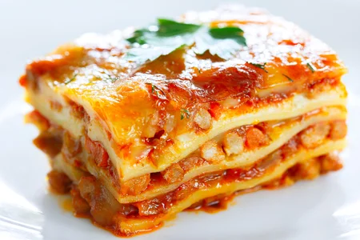

Lasagna

Description
Everyone loves a good lasagne, right? This italian classic even freezes and reheats well, makihng it great for leftovers!
This recipe will serve eight people, so let's find out how to make it...
Ingredients
- 2 tsp extra virgin olive oil
- 1 pound ground beef chuck
- 1/2 medium onion, diced
- 1/2 large bell pepper (greed, red, or yellow), diced
- 2 cloves garlic, minced
- 1 tin chopped tomatoes
Steps
- Put pasta water on to boil, along with some salt
- Brown the ground beef, use 2 tsp olive oil on medium high heat
- Cook pepper, onions and garlic, cook for 4 to 5 minutes - return beef to pan once done
- Transfer to medium sized pot, add tomatoes and make sauce
- Heat oven to 375C
- ...